april 2007
Signal Workbench, demo Filter Design
Introduction
This demo shows how you can easily compare a number of different filter designs with Signal WorkBench.
This document also shows, how terrible beautiful, but clumsy, we did filter design in the past with MatLab.
The good thing about MatLab is, they have a very extensive and reasonable (yes it contains a lot of errors) good online book (free), covering the Signal Analysis package, which looks reasonable identical to the possibilities of SciPy.
In fact generating this document was the first real-life test of Signal WorkBench, so some of the examples and pictures shown on this page, might be premature or contain small in-perfections.
Goal
Suppose we want to design a filter and compare several filter-designs with each other. We not only want to compare the results like frequency response and impulse response but also we want to see and compare the effect of the different filters on the real signal. Let's say we want to compare a maximum of 4 filters at a time, and we want to compare frequency response (separated in amplitude and phase, and both in overall view and passband details), impulse response (overall and detail) and of course the real signal response (and maybe we also want step response). Now there are several ways to accomplish this test setup with Signal WorkBench, but the most obvious solution is to create one graphical window for each parameter (where total overview and detailed view will be placed in separate windows). So this will lead us to a calculation tree, which might look something like this:
|
The top node contains a reference to the real signals, in this case the signals are read from a file. The second node is not relevant in this discussion. The third node is the start of the filter calculations, and will generate the overall view of the amplitude-frequency response. All other graphical views are created as a child of the filter start-node. The reason for this is simple, we now can save the filter start-node as a template and reuse the complete start-node (with all its children), whenever we need it. The nodes with the blue icons will show their output signals, the nodes with the yellow icons, will not popup a graphical window. Toggling graphical view on/off can simply be done by clicking on the icon. |
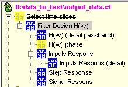 |
Filter parameters
We'll use Scipy.Signal naming as much as possible, but here and there we'll try to be a little more consistent.
Filter Start-node
As we should have only 1 node, where all essential code should be located (for easy manipulation), this will become the filter start-node. All child nodes just serves as a place holders for the graphical views (but can contain also non-essential code). Below the code for the filter start-node is given, for simplicity only one of the four filters is defined here.
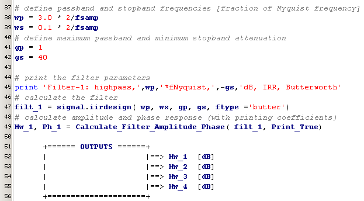
Line 38,39 holds the passband and stopband frequencies, expressed in fraction of the Nyquist frequency (half of the sample frequency), and as we like to define them as frequency expressed in Hz, we use some simple transformation formula.
Line 45 contains a print statement which describes the filter characteristics, so we'll get a nice overview of the filter characteristics and the calculated parameters.
Line 47, the actual calculation of the filter coefficients. We set Printer_True, so this function will output the calculated coefficients (and in the future maybe zero and poles) to the standard output device.
Line 49, from the filter coefficients we calculate amplitude and phase respons.
And finally on line 51..56 we define the signals that will be displayed by this window.
Other filter nodes
Most of the other nodes don't contain any code, just the definition of the signals to be displayed.
So for the "H(w) phase" node we have:
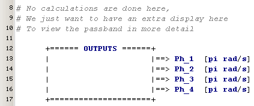
For the impulse response node, we can do some parameterless calculations (so the filter start-node will have as least code as possible). Of course we have to define the output signals, to be shown in the graphical view. (Note, we didn't use the function signal.impuls here, because the version of signal we used, during writing this page, crashed. Probably this is solved in the newer version.)
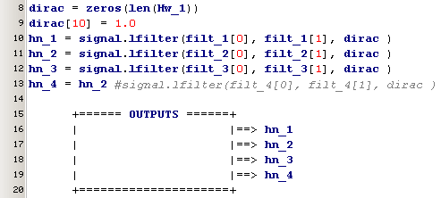
Action
After defining all the display nodes (and save the start-node as a template for future use), select the filter start-node in the calculation tree, press Shift-F9, and watch ...
... we get a nice overview of the design parameters of the different filters,
... and all graphical views we've defined will popup with their specific signals
all with just 1 click !!
After you've initialized all your graphical windows, just edit 1 or more parameters in the filter start-node, press Shift-F9 and you'll see the effect of your parameter change in all graphical windows.
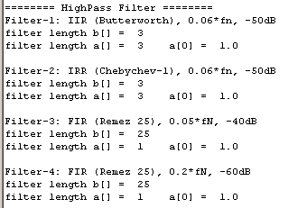
The picture below shows the amplitude response (total overview on the left, detail on the right) of the 4 filters. The nicest response is from the first (blue) filter, but judged from the amplitude response only, they are all not bad.
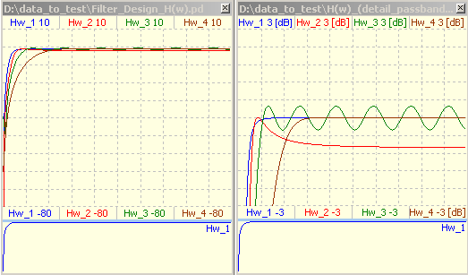
The picture below shows the phase response on the left (notice the linear phase characteristic of FIR filters 3 and 4, which can be seen better if the picture is enlarged or if the phase is unwrapped), and the step response on the right (time expanded).
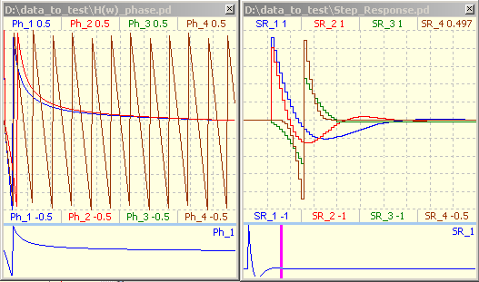
The picture below shows the pulse response, again overall view on the left (time is expanded) and detail view on the right (full time). They all look good, if we discard the extra time-delay of the FIR filters 3 (green) and 4 (brown).
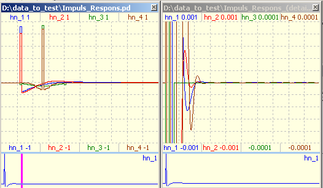
And finally the most important view: the signal response (time expanded). The black signal at the bottom shows the original input signal. The start of the original signal clearly contains a low frequency component, which we want to get rid off. The filtered signals are time-expanded, so we can take a good look at the first part of the signal.
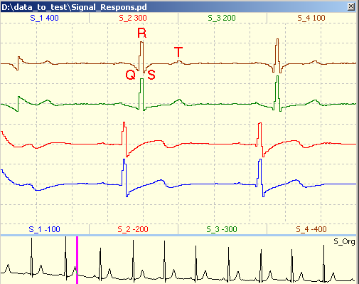
The signal is a recording of a human ECG (Electrical signal recorded from the hart), and in this case we're interested in determining the exact locations in time of Q,R,S,T peaks as shown in the brown signal. Because this is a non-stationary signal, both the FIR filters (brown and green) perform much better in preserving the shape of the signal.
FIR, Remez exchange
Filterlength must be odd to get a gain of 0dB at the Nyquist frequency !!
remez(numtaps, bands, desired, weight=None, Hz=1, type='bandpass', maxiter=25, grid_density=16)
Scipy.Signal
The SciPy Signal library contains the following filter design algorithms
Filter design:
remez -- Optimal FIR filter design.
firwin --- Windowed FIR filter design.
iirdesign --- IIR filter design given bands and gains
iirfilter --- IIR filter design given order and critical frequencies
freqs --- Analog filter frequency response
freqz --- Digital filter frequency response
Matlab-style IIR filter design:
butter (buttord) -- Butterworth
cheby1 (cheb1ord) -- Chebyshev Type I
cheby2 (cheb2ord) -- Chebyshev Type II
ellip (ellipord) -- Elliptic (Cauer)
bessel -- Bessel (no order selection available -- try butterod)
How we did it with MatLab
For years we've used MatLab (Signal Toolbox) to design filters, see in the picture below how terrible nice it looks. But although the generated filter coefficients are correct, it's a nightmare to optimize and compare filters with this MatLab tool.
Every time you change the filter type, sample frequency is lost, other edit boxes appear, run button is often dimmed, and for each filter MatLab chooses the scaling of the figure (compare the 2 figures). Storing a set of coefficients in your own directory, is a crime, MatLab always starts at it's own directory.
Knowing we couldn't change this behavior, we accepted this tool for years.
Now knowing Python, we can influence the behavior and we're very happy in using this new tool..
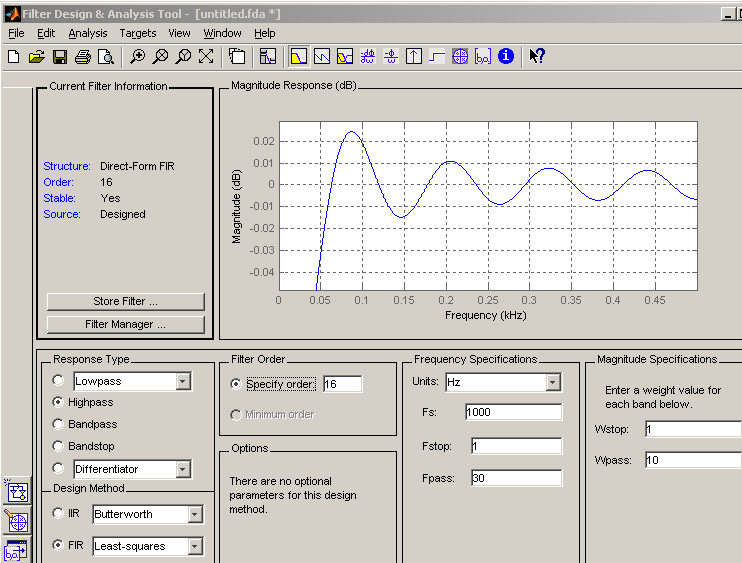
Comparing it with another filter design, argh MatLab itself chooses it's scale !!
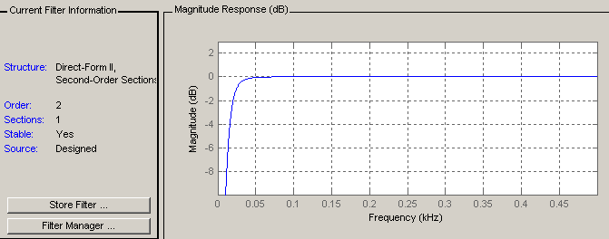